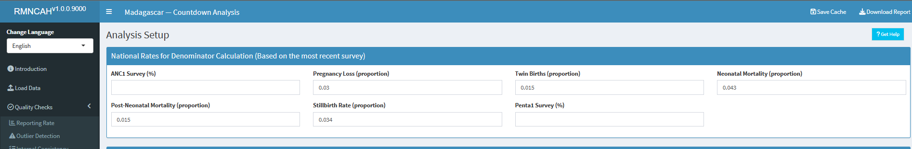
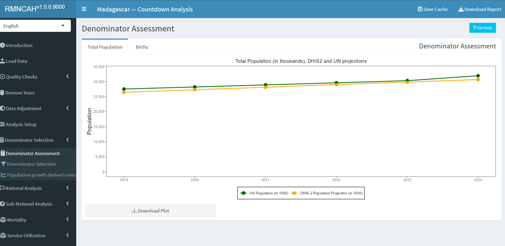

Denominator Assessment and selection
Rationale: Scientific basis for the analysis
Service coverage is defined as the population who received the service divided by the population who need the services (also referred to as target population). The numerators of coverage statistics (e.g., number of live births in health facilities) are derived from the health facility data and need to be adjusted as shown in the previous section. The denominator of the coverage statistics (e.g., number of live births in the population) needs to be estimated for national and sub-national levels (regions/provinces and districts).
Approach: Description of analytical steps
The objective of the health facility denominator analysis is twofold. First, we assess the quality of the population projections in DHIS2 by comparison with the UN projections and the internal consistency. Then, we assess the performance of multiple denominators options for the computation of population-based service coverage indicators from the health facility data. This should lead to a final decision on denominators that are used for the analyses of population-based coverage indicators based on health facility data.
Each indicator has its own denominator, as shown in the table below.
Table 3: Selected indicators with numerators and denominators
| Indicators | Numerator | Denominator |
|---|---|---|
| SERVICE UTILIZATION | ||
| Outpatient visits, children under 5, per year (N) | N of OPD visits for under-5 | Total mid-year population under 5 |
| Inpatient admissions, children under 5, per year (N) | N of admissions for under-5 | Total mid-year population under 5 |
| PREVENTIVE INTERVENTIONS | ||
| % of pregnant women with 4 antenatal care visits | N of women with ANC 4th visit | Total N of pregnant women in the whole population |
| % of live births in health facilities | N of live births in health facilities | Total N of live births in the whole population |
| % of infants receiving 3 doses of pentavalent vaccine | N of infants receiving 3 doses | N of infants eligible for 3 doses of the vaccine |
| CURATIVE INTERVENTIONS | ||
| % of children under 5 with malaria who receive ACT | N of children under 5 with malaria receiving ACT | Total N of children who had malaria in the last year |
| % of deliveries that were by C-section (population) | N of C-sections reported | Total N of deliveries in the population |
| % of deliveries that were by C-section (institutional) | N of C-sections reported | Total N of deliveries in health facilities |
| MORTALITY | ||
| Institutional maternal mortality ratio | N of maternal deaths in health facilities | Total number of live births in health facilities |
| Stillbirth rate | N of stillbirths in health facilities | Total N of births in health facilities |
| Neonatal mortality before discharge | N of neonatal deaths before discharge (after birth) | Total N of live births in the health facilities |
| FAMILY PLANNING (FP) | ||
| Ratio FP visits to women of reproductive age | N of FP new and revisits | Total N of women 15-49 years |
| Estimated modern use of contraceptives | Couple years of protection | Total N of women 15-49 years |
| FP coverage (demand satisfied) | N of women using modern methods | Total N of women in need of FP |
In the first part, we assess the quality of the DHIS2 population projections at national level:
Check the internal consistency of the DHIS2 population growth over time:
Compute the population growth rate:
\[ \frac{\text{pop}_{2024} - \text{pop}_{2023}}{\text{pop}_{2023}} \]
Compute the crude birth rate (CBR), defined as the number of live births per 1,000 population.
Expect both growth rate and CBR to be consistent over time (e.g., less than 2 per 1,000 difference between years).
Compare the population data in DHIS2 with the UN population projections at the national level:
Differences may occur, but large discrepancies suggest issues with DHIS2 population projections.
The comparison is done for four indicators. Abnormal values are flagged:
Population size:
A relative difference between DHIS2 and UN-projected population size greater than 5% indicates a data quality issue.\[ \left| \frac{\text{pop}_{\text{DHIS2}} - \text{pop}_{\text{UN}}}{\text{pop}_{\text{UN}}} \right| \]
Population growth during 2023–2024:
Annual growth is computed using the natural logarithm:\[ \ln \left( \frac{\text{pop}_{2024}}{\text{pop}_{2023}} \right) \]
A difference greater than 0.3% (absolute) between DHIS2 and UN estimates is concerning.
Crude birth rate (CBR):
Defined as: \[ \frac{\text{projected live births}}{\text{total population}} \times 1000 \]A difference greater than 5 per 1,000 population compared to the UN estimate suggests a data quality issue.
Crude death rate (CDR):
Defined as:\[ \text{CBR} - \text{population growth rate} \]
(both expressed per 1,000 population). A negative CDR or a CDR < 5 per 1,000 indicates inconsistency and potential data problems.
The second part is to select the best performing denominator for population coverage estimates with facility data. First, we compare the results for different denominators at the national level.
For the national level, we evaluate 4 denominator methods. The first two are projection methods (DHIS2 estimate and UN estimate), and the additional two are facility data- based methods ( ANC1-derived and penta1-derived denominators).
Note
- For the sub-national level, no UN projections are available, so we will use 3 methods only.
The maternal and newborn health denominators are closely related and can be computed from each other by making assumptions.
Starting with pregnancies, the number of live births is closely associated with the number of pregnancies, which are usually identified within the health system at the first antenatal visit which in most countries is around 4-5 months of pregnancy (according to the surveys). Country specific values are preferred where available and can be obtained from the WHO website. The default assumptions are as follows:
Pregnancy loss between 4 and 7 months (28 weeks of pregnancy): 3%.
Stillbirths or pregnancy loss between 28 weeks and birth: 2%.
Twinning rate: 1.5%. These first three steps give the number of live births computed from pregnancies.
Neonatal mortality: 3% (or 30 per 1,000 live births).
Post neonatal mortality (between 1-11 months): 2.4% (or 24 per 1,000 live births).
The selection of the best performing denominator method is based on a comparison of the performance of the DHIS2 projection and facility-data derived methods for two indicators: institutional live births and penta3. The gold standard is the population coverage rates from a recent survey, for a year as close as possible. The absolute difference between survey and facility-based coverage at national and sub-national levels is used to select the best performing indicator. (This can also be expressed as the number of standard errors from the survey value but this requires including the standard errors from the surveys – the results will be the same).
Facility data derived denominators
The basic idea is that if the coverage of an indicator is high (e.g., over 90%), then the number of events reported by health facilities has to be close to the target population. In other words, the denominators or target population can be derived from the numbers in DHIS2. The best candidate indicators for this approach are ANC1 and DPT/penta1 (BCG also possible in some countries if re-vaccinations are recorded separately).
This approach requires the following:
A recent population-based survey is used to obtain an estimate of population level coverage of ANC1 or penta1. For example, ANC1 coverage is 95% of pregnant women.
The DHIS2 data on the number of ANC1 and penta1 visits need to be considered complete and accurate (after adjustments / cleaning the data). For example, 100,000 ANC1 visits were reported.
If this is the case, then we only need to add the percentage that has not used the services (according to the survey results) to get the target population. For example, if ANC1 coverage from survey is 95% and the number of ANC1 visits from DHIS2 for the year is 100,000, the total number of pregnant women is: \[ 100,000 / 0.95 = 105,263 \]
The same approach can be used for DPT1 or penta1. The survey coverage is the percent of children 12-23 months who received DPT1/penta1, the facility data are the number of infants who received DPT1/penta1 vaccination. For example, if survey coverage is 92%, and there were 100,000 vaccinations given, then the \[ denominator= 100,000 / 0.92 = 108,696. \]
The number of live births can be obtained from ANC1 and DPT1 by making assumptions about pregnancy loss (abortion after the first ANC visit, stillbirths), twinning rates, and neonatal mortality. These steps are shown in the Figure below. ![] (images/1-dqa_denom_adjustment.png)
An example of ANC1:
Above we computed 105,263 pregnant women in the population
at 3% abortion, this implies 105,263 * (1-.0.03) = 102,454 deliveries
at 1.5% twinning rate this implies 102,454 / (1-(0.015/2)) = 103,229 births
at 2% stillbirth rate this implies 103,229 * (1-0.02) = 101,164 live births
at 3% neonatal mortality this implies 101,164 * (1-0.03) = 98,129 children eligible for DPT1/penta1.
Implementation: Conducting analysis in the Shiny App
Shiny App
To get outputs for this analysis first, one need to set up their analysis by inputting key information at the Analysis Set up section in the Shiny App.
The parameters required are as shown in the figure below and they are:
National mortality rates - based on the most recent survey 
- ANC1 Survey -
- Pregnancy loss -
- Twin rate -
- Neonatal mortality rate -
- Post neonatal mortality rate -
- Stillbirth rate -
- Penta1 survey -
Survey coverage based percentages (based on the most recent survey)

- ANC4 Survey -
- Institutional delivery survey -
- Lowbirth weight survey -
- Caesarean section survey -
- Penta3 survey -
- Measles1 survey -
- BCG survey -
- Vaccines survey year -
- Vaccine data start year -
Survey datasets
In addition to setting these parameters, you will be required to upload the following survey datasets (in addition to the health facility data loaded at the beginning of the analysis session).

- UN Estimates data
- UN Mortality data
- WUENIC estimates data
- Survey data (uploaded as a folder)
The first part is to assess the accuracy and consistency of the projected population numbers in the DHIS-2 by comparing them to external sources. The second part is to compare results from the different methods - both at the national and sub-national levels.
The final step is to select the best performing denominator for the coverage analyses with health facility data. The results on the national gap and the median sub-national gap should be taken into account to make that choice.

The best methods have the smallest gaps with the survey results. Ideally, one method is selected but it is also possible to select one denominator method for the MNH coverage indicators (ANC, delivery, PNC) and another method for the immunization coverage analyses. It will be important to clearly state the chosen denominator method in all tables.
The interpretation should focus on the extent to which the DHIS2 projections are considered robust which is the case when:
The DHIS2 total population projection is consistent over time with regular population growth
The DHIS2 total live birth projection is consistent over time (regular trend)
The projected numbers of total population and live births are close to the UN population projection
The DHIS2 population projections are consistent with UN estimates for crude birth rate and crude death rate.
The interpretation should describe, based on the graphs:
Which denominator methods performed best at the national level for the two indicators?
Which denominator performed best at the sub-national level for the two indicators?
What selection is made for the indicators in the coverage analyses?